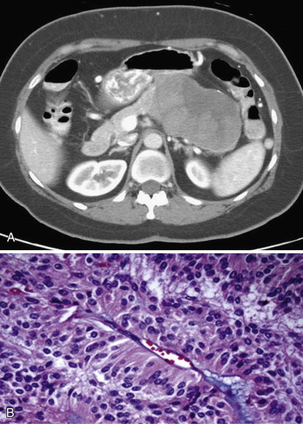
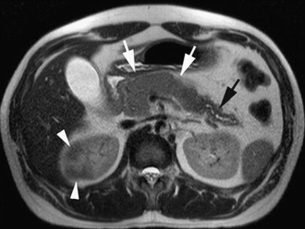
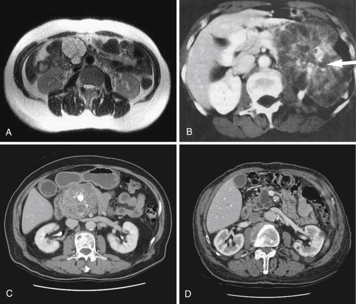
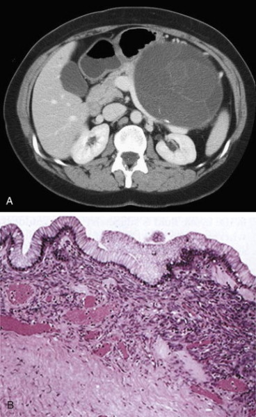
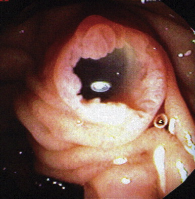
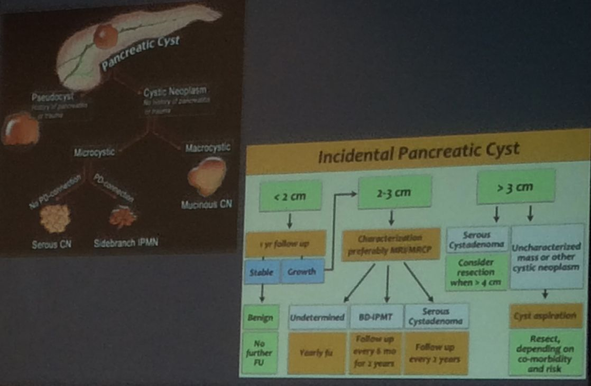

| Who |
Imaging |
|
| SCN |
75%F 60-70y (Granny) |
Lobulated Microcystic 20% central scar. central Ca++ |
| MCN |
99%F 40-50y (Mother) |
Macrocystic; us. 1 25% peripheral Ca++ 95% in tail and body |
| Main duct IPMN |
M=F 60-80y |
Dilated pancreatic duct Protruding POV |
| Side branch IPMN |
M=F 60-80y |
Bunch of grapes; connected to PD |





